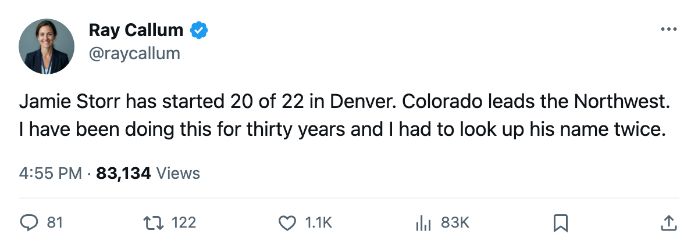
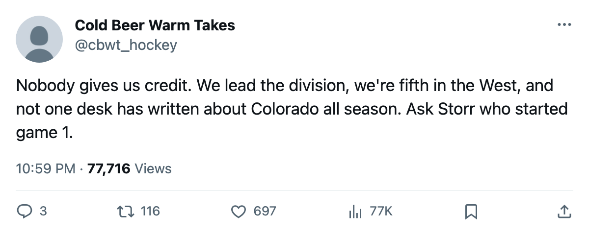

Goalie Watch: Storr Has Started 20 of 22, and Colorado Leads the Northwest
The Avs are fifth in the West with a 91% workload on their backup and nobody on this desk noticed until now
 Ray CallumSenior correspondent · Home Ice Network
Ray CallumSenior correspondent · Home Ice Network
 Colorado Avalanche is 9-7-4, 26 points, first in the Northwest Division. The Avs are fifth in the Western Conference, 9 points behind
Colorado Avalanche is 9-7-4, 26 points, first in the Northwest Division. The Avs are fifth in the Western Conference, 9 points behind  Dallas Stars, and this desk has not filed a word about them all season.
Dallas Stars, and this desk has not filed a word about them all season.
 Jamie Storr77 has started 20 of 22 games. That's a 91% workload share, the third-highest of any goaltender in the league.
Jamie Storr77 has started 20 of 22 games. That's a 91% workload share, the third-highest of any goaltender in the league.  Trevor Kidd77 has started 2. The Avs are winning with him.
Trevor Kidd77 has started 2. The Avs are winning with him.
The 4-game win streak, Colorado's longest of the season, includes Friday's 2-1 decision over  Chicago Blackhawks at the Pepsi Center. The last 10 games read WWWWLLLOTLWL. Across those 10, the goal differential is minus 3. Goaltending has carried this streak, not the scoring.
Chicago Blackhawks at the Pepsi Center. The last 10 games read WWWWLLLOTLWL. Across those 10, the goal differential is minus 3. Goaltending has carried this streak, not the scoring.
The season totals confirm the pattern. Colorado has scored 56 and allowed 58, a minus-2 goal differential across 22 games. They sit first in a five-club division.  Vancouver Canucks trails at 25 points,
Vancouver Canucks trails at 25 points,  Calgary Flames at 23, and
Calgary Flames at 23, and  Minnesota Wild and
Minnesota Wild and  Edmonton Oilers are tied at 22. Four points separate first from fifth with 60 games left.
Edmonton Oilers are tied at 22. Four points separate first from fifth with 60 games left.
Colorado plays  San Jose Sharks tonight at home. San Jose is 7-8-4, 11th in the West, on a 2-game losing streak. The first meeting went to Colorado 4-1. The Avs have won 4 straight. The Sharks have lost 2 straight.
San Jose Sharks tonight at home. San Jose is 7-8-4, 11th in the West, on a 2-game losing streak. The first meeting went to Colorado 4-1. The Avs have won 4 straight. The Sharks have lost 2 straight.
The workload leaders are not all winning
 Roman Cechmanek90 has started 95% of Los Angeles's games and the Kings are 4-11-4, last in the Pacific.
Roman Cechmanek90 has started 95% of Los Angeles's games and the Kings are 4-11-4, last in the Pacific.  Johan Hedberg85 has started 95% of Pittsburgh's games and the Penguins are on a 4-game losing streak. Storr carries a similar load. The difference is the team in front of him. The Avs sit first in their division.
Johan Hedberg85 has started 95% of Pittsburgh's games and the Penguins are on a 4-game losing streak. Storr carries a similar load. The difference is the team in front of him. The Avs sit first in their division.
The backup is thin
Colorado Avalanche has 14 injury spells and 53 days lost this season. The second string is what it is. Kidd carries 2 games on his 2005-06 line. The next three games come against division opponents: San Jose Sharks tonight, Minnesota Wild on November 29, Edmonton Oilers on November 30. If Storr carries all three, the streak becomes 7 and the division lead widens.

